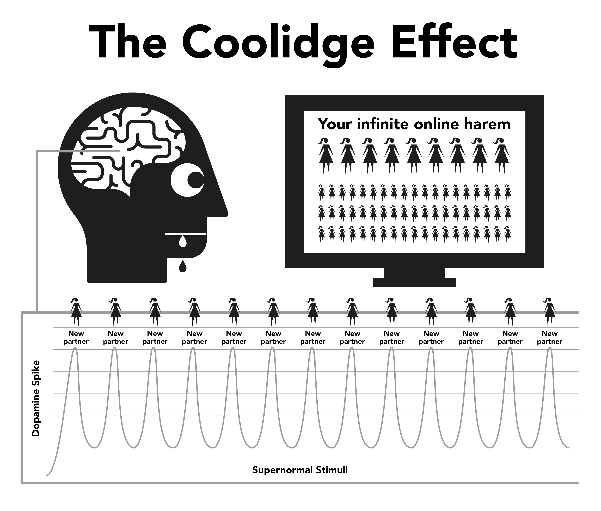

Chương 4: Tự nhiên¶
Porn hoạt động bằng cách chiếm đoạt cơ chế phần thưởng tự nhiên được thiết kế để duy trì khả năng sinh sản của bạn càng lâu càng tốt. Dạng thức tức thời và dễ tiếp cận của porn trên mạng khiến cơ chế phần thưởng của não sản xuất dopamine lâu hơn đáng kể so với bình thường. Về mặt khoa học, đây được gọi là hiệu ứng Coolidge (Coolidge Effect) mà bạn có thể đã biết.
Dopamine là chất dẫn truyền thần kinh liên quan đến cảm giác ham muốn, với khoái cảm thực sự do opioid tạo ra. Nhiều dopamine hơn, nhiều opioid hơn và nhiều hành động hơn. Nếu không có dopamine, các hành động như ăn không còn cảm giác thú vị và không được hoàn thành, với thực phẩm nhiều chất béo và đường gây ra sự sản xuất dopamine cao nhất.
Dopamine còn được giải phóng để phản ứng với những "điều" mới lạ. Với lượng porn gần như vô tận trên mạng, điều này gây ra sự quá tải cho hệ thống limbic (mạch phần thưởng). Vì thế, ngay lần đầu xem porn, bạn sẽ phản ứng, đạt cực khoái và kích hoạt một đợt opioid khác. Được khuyến khích để có được càng nhiều dopamine càng tốt, não bộ lưu trữ điều này như một tập lệnh để dễ dàng nhớ lại và củng cố các đường dẫn thần kinh thông qua việc giải phóng một chất hóa học có tên là DeltaFosB. Bây giờ, não bộ gọi ra những con đường dẫn này để phản ứng với các tín hiệu như quảng cáo gợi cảm, thời gian rảnh ở một mình, căng thẳng hoặc thậm chí cảm thấy hơi hụt hẫng và đột nhiên bạn sẵn sàng lặp lại những hành động để đáp ứng cho cơn nghiện porn. Mỗi khi điều này được lặp lại, càng có nhiều DeltaFosB được giải phóng để bôi trơn đường dẫn thần kinh, làm nó trở nên sống động và dễ dàng để lặp lại hành vi khi lên cơn nghiện.
Hệ thống limbic có một hệ thống tự điều chỉnh để cắt giảm số lượng các thụ thể dopamine và opioid khi phát hiện sự tràn ngập dopamine thường xuyên và hàng ngày. Thật không may, những thụ thể này cũng cần thiết để giữ cho chúng ta có động lực để giải quyết những căng thẳng trong cuộc sống thường ngày. Lượng dopamine ít ỏi từ những phần thưởng tự nhiên không thể nào so sánh với porn, và cũng không được các thụ thể đã suy giảm hấp thụ hiệu quả, khiến bạn cảm thấy căng thẳng và dễ cáu giận hơn bình thường. Quá trình này được gọi là giải mẫn cảm (desensitisation).
Trong chu kỳ này, bạn đã vượt qua 'ngưỡng giới hạn' và gây ra những cảm xúc như cảm giác tội lỗi, ghê tởm, xấu hổ, lo lắng và sợ hãi, do đó làm tăng mức dopamine thậm chí cao hơn và khiến não bộ hiểu nhầm những cảm giác này là kích thích tình dục.
Theo thời gian, não bộ không chỉ trở nên mất nhạy cảm với những đoạn phim đã xem trước đó, mà còn với các thể loại và mức độ gây sốc tương tự. Sự suy giảm động lực này kích hoạt cảm giác kém hài lòng, khi não bộ liên tục đánh giá, thúc đẩy bạn tìm kiếm những đoạn phim để thỏa mãn cơn nghiện. Vì vậy, bạn tìm kiếm sự mới lạ hơn, nhấp vào clip dị hơn, nặng đô gây sốc hơn trên web sex mà bạn tự tin nói rằng bạn sẽ không xem nó trong lần truy cập đầu tiên vì nó quá tởm.

"Vì trong sự thuần khiết của những điều nhỏ bé, trái tim thấy trời sáng và được tỉnh lại"
— Kahlil Gibran
Chỉ một chút cảm giác an toàn cũng đủ để giúp ta vượt qua những thời điểm khó khăn, nhưng liệu bộ não đã bị chai sạn vì nghiện của bạn có còn đủ nhạy bén để nhận ra chút xoa dịu nhỏ nhoi mà người không xem có thể dễ dàng cảm nhận?
Cơn lũ dopamine hoạt động giống như một loại thuốc tác dụng nhanh, giảm nhanh chóng và gây ra cảm giác thiếu thốn đau đớn. Nhiều người dùng lầm tưởng rằng những cơn khó chịu này là trải nghiệm tiêu cực mà họ phải chịu đựng khi cố gắng hoặc bị ép buộc dừng lại. Trên thực tế, chúng chủ yếu là những cơn đau về mặt tinh thần vì người nghiện cảm thấy mất đi niềm vui hoặc chỗ dựa của họ.
Con tiểu quỷ (The Little Monster)¶
Quá trình dừng xem porn dopamine về mặt hóa học diễn ra âm thầm đến mức hầu hết người nghiện sống cả đời mà không hề hay biết mình là con nghiện. Nhiều người nghiện sợ ma túy, nhưng thực tế họ chính là những con nghiện ma túy. May mắn thay, đây là loại ma túy dễ cai, nhưng trước tiên bạn cần phải chấp nhận rằng thực tế rằng bạn đang bị nghiện. Việc dừng xem porn (Withdrawal from porn) không gây ra bất kỳ cơn đau nào về thể chất và chỉ là cảm giác trống rỗng, bồn chồn khi thiếu một thứ gì đó, đó là lý do tại sao nhiều người tin rằng đó là điều gì đó liên quan đến ham muốn tình dục. Sử dụng trong thời gian dài, cảm giác này trở nên hồi hộp, bất an, dễ bị kích động, kém tự tin và hay cáu gắt. Nó như cơn thèm khát, nhưng là thèm khát một thứ chất độc.
Trong vòng vài giây sau khi xem sex thủ dâm, dopamine được cung cấp và cơn thèm thuốc kết thúc, dẫn đến cảm giác thỏa mãn khi bạn 'ngựa quen đường cũ'. Trong những ngày đầu, cơn thèm thuồng và sự giải tỏa sau đó rất nhẹ nhàng, chúng ta không nhận ra chúng. Khi chúng ta trở thành "người dùng thường xuyên", chúng ta tin rằng đó là vì chúng ta đã thích chúng hoặc đã hình thành 'thói quen'. Sự thật là chúng ta đã bị mắc kẹt nhưng không nhận ra điều đó. Con tiểu quỷ đã ẩn náu trong não bộ, và ta cứ thế 'trượt' xuống máng trượt nước, hết lần này đến lần khác, để thỏa mãn nó.
Tất cả người nghiện bắt đầu tìm kiếm porn vì những lý do phi lý. Lý do duy nhất để mọi người tiếp tục xem porn, cho dù họ là người nghiện bình thường hay nặng, là để nuôi con tiểu quỷ đó. Toàn bộ câu hỏi hóc búa là một loạt các hình phạt tàn nhẫn và khó hiểu, nhưng có lẽ khía cạnh thảm hại nhất là cảm giác tận hưởng của người nghiện từ porn và thủ dâm, cố gắng lấy lại cảm giác yên bình, tĩnh lặng và tự tin mà cơ thể của họ có trước khi bị cuốn vào nó.
Tiếng chuông phiền phức (The Annoying Alarm)¶
Bạn có hình dung được cái cảm giác khó chịu khi chuông báo động nhà hàng xóm reo inh ỏi cả ngày - hoặc một sự phiền toái nhỏ nhặt nhưng dai dẳng nào đó - rồi khi tiếng ồn đột nhiên biến mất, và cảm giác bình yên, tĩnh lặng tuyệt vời tràn ngập tâm hồn bạn? Đó không phải là cảm giác bình yên, mà chỉ là sự chấm dứt của một cơn đau dai dẳng. Trước khi bắt đầu lại xem porn và thủ dâm, cơ thể chúng ta hoàn toàn bình thường, nhưng sau đó chúng ta bắt đầu ép não bộ bơm dopamine, và khi chúng ta đã "ra" và dopamine bắt đầu rút đi, chúng ta phải chịu đựng những cơn thèm. Đây không phải là cơn đau về mặt thể chất mà chỉ đơn thuần là một cảm giác trống trải. Ta thậm chí không nhận ra nó, nhưng nó cứ âm ỉ như tiếng vòi nước rỉ rả trong người.
Lý trí của chúng ta không hiểu được điều đó, nhưng cũng chẳng cần thiết. Tất cả những gì chúng ta biết là chúng ta muốn porn và khi thủ dâm, cơn thèm đó sẽ biến mất. Tuy nhiên, cảm giác "thỏa mãn" này chỉ thoáng qua, bởi để có thể giải tỏa cơn thèm thì cần có nhiều porn hơn. Ngay khi bạn đạt cực khoái (orgasm), cơn thèm lại bắt đầu và cái bẫy tiếp tục giữ bạn lại. Một vòng lặp phản hồi (feedback loop), trừ khi bạn phá hủy nó.
Cái bẫy của Porn cũng giống như việc đi giày chật chỉ để có được cảm giác thoải mái khi cởi ra. Có ba lý do chính khiến người nghiện không thể nhìn nhận vấn đề theo cách này:
- Ngay từ khi sinh ra, chúng ta đã bị tẩy não bởi vô số thông tin sai lệch, rằng porn trên mạng chỉ đơn giản là một sự phát triển hiện đại thay thế cho phiên bản in ấn. Sự ngụy biện này được gói gọn cùng với sự thật rằng thủ dâm không có hại, vậy tại sao chúng ta không nên tin họ?
- Do hội chứng cai dopamine không gây đau đớn thể xác, mà chỉ là cảm giác trống rỗng, bất an, lẫn lộn với cơn đói và căng thẳng thường ngày, nên ta thường tìm đến porn mỗi khi cảm giác này xuất hiện. Và ta dần xem nó như một điều bình thường (Dopamine withdrawal: Sự rút lui dopamine, là hiện tượng xảy ra khi não bộ giảm sản xuất hoặc giảm phản ứng với dopamine, một chất dẫn truyền thần kinh liên quan đến cảm giác khoái lạc và động lực).
- Tuy nhiên, lý do chính khiến người nghiện không nhìn được bản chất thật của porn là do nguyên lý hoạt động back to front (Dịch nôm na: Hoạt động ngược). Chính khi bạn không xem porn, bạn mới phải chịu đựng cảm giác trống rỗng. Vì quá trình bị nghiện diễn ra cực kỳ tinh vi và dần dần, từ những ngày đầu, cảm giác trống rỗng được coi là bình thường và do đó nguyên nhân gây ra cảm giác trống rỗng ấy không được gán cho buổi xem porn trước đó. Ngay khi mở trình duyệt và bạn bắt đầu lần xem porn của mình, bạn sẽ nhận được một pha boost tức thì từ việc xem ấy nên bạn bắt đầu tin rằng porn giúp bạn giảm căng thẳng.
Quá trình đảo ngược "từ sau ra trước" này khiến tất cả các loại ma túy đều khó bỏ. Hãy tưởng tượng trạng thái hoảng loạn của một người nghiện heroin mà không có heroin; bây giờ hãy hình dung cảm giác sướng tột độ của họ khi cuối cùng cũng có thể đâm kim tiêm vào tĩnh mạch. Những người không nghiện heroin không phải chịu đựng cảm giác hoảng loạn đó.
Heroin không làm giảm cảm giác hoảng loạn đó mà chính nó mới là nguyên nhân gây ra cảm giác ấy. Tương tự, những người không xem porn không phải chịu đựng cảm giác trống rỗng khi cần porn, hoặc hoảng loạn khi họ ngoại tuyến. Người không xem porn không thể hiểu làm thế nào người nghiện có thể có được niềm vui từ những video 2D không có tiếng với tỷ lệ cơ thể bất thường. Và chính người nghiện cũng không thể hiểu được.
Chúng ta cho rằng porn giúp ta thư giãn và cảm thấy thoải mái, nhưng làm thế quái nào mà bạn có thể trở nên thoải mái trừ khi bạn không thoải mái ngay từ đầu? Một người không xem porn không phải chịu đựng cảm giác này, hoàn toàn thư giãn sau một buổi hẹn hò no sex, trong khi người nghiện thì không cho đến khi họ thỏa mãn "con tiểu quỷ" của họ.
Niềm vui hay chỗ dựa?¶
Lưu ý quan trọng — lý do chính khiến người nghiện thấy khó bỏ là do niềm tin rằng họ đang phải từ bỏ một niềm vui hoặc chỗ dựa thực sự. Sự thật là, bạn không hề mất gì cả. Cách tốt nhất để hiểu sự tinh tế của bẫy porn là so sánh nó với việc ăn uống. Thói quen ăn uống thường xuyên khiến chúng ta không cảm thấy đói giữa các bữa ăn, chỉ nhận thức được cơn đói nếu bữa ăn bị trì hoãn. Không có cơn đau về mặt thể chất nào, chỉ là một cảm giác trống rỗng, bất an bị gây ra bởi cơn đói. Quá trình thỏa mãn cơn đói là một trải nghiệm rất dễ chịu.
Cách porn hoạt động cũng gần tương tự. Giống như cơn đói, không có cơn đau về mặt thể chất nào và cơ chế phần thưởng cũng hoạt động theo cách tương tự khi ăn, nhưng chính sự tương đồng với việc ăn uống này đã đánh lừa người nghiện tin rằng có một niềm vui hoặc chỗ dựa thực sự nào đó từ Porn. Mặc dù ăn uống và porn có vẻ rất giống nhau, nhưng trên thực tế chúng hoàn toàn trái ngược nhau.
- Bạn ăn để tồn tại và cung cấp năng lượng cho cuộc sống của bạn, trong khi porn làm lu mờ và cắt giảm động lực (mojo) của bạn.
- Ăn uống là một trải nghiệm đích thực, mang lại niềm vui và sự thỏa mãn suốt cuộc đời. Ngược lại, porn lại là hành động tự hủy hoại, tàn phá các thụ thể hạnh phúc, khiến bạn mất đi khả năng đối phó với khó khăn và cảm nhận niềm vui.
- Ăn uống không tạo ra cơn đói và thực sự làm giảm cơn đói, trong khi lần xem porn đầu tiên khiến bạn phải chịu đựng cơn thèm dopamine và tương tự cho những lần xem tiếp theo. Thay vì làm giảm nó, nó khiến bạn phải chịu cảnh thống khổ trong phần đời còn lại.
Ăn uống có phải là một thói quen không? Nếu bạn nghĩ vậy, vậy thử nhịn ăn hoàn toàn xem. Nói việc ăn uống là thói quen cũng giống như nói việc thở là thói quen — cả hai đều cần thiết cho sự sống còn. Đúng là mọi người có thói quen ăn uống để hết đói vào những thời điểm khác nhau với các loại thức ăn khác nhau, nhưng bản thân việc ăn uống không phải là thói quen. Porn cũng không phải. Lý do duy nhất khiến người nghiện mở trình duyệt là cố gắng chấm dứt những cảm giác trống rỗng mà lần xem porn trước đó đã gây ra, vào những thời điểm khác nhau với các thể loại khác nhau.
Trên mạng, người ta thường gọi porn là một 'thói quen', và để dễ hiểu, EasyPeasy cũng sử dụng thuật ngữ này. Tuy nhiên, hãy luôn ghi nhớ rằng porn không phải là thói quen, mà là MỘT DẠNG NGHIỆN NGẬP! Khi mới bắt đầu, chúng ta phải tự ép mình làm quen. Nhưng chẳng mấy chốc, ta đã lao vào những nội dung ngày càng kỳ quái và gây sốc. Cảm giác hưng phấn nằm ở quá trình tìm kiếm, không phải ở khoảnh khắc thỏa mãn. Dopamine nhanh chóng suy giảm sau khi đạt cực khoái, đó là lý do người nghiện thường 'edge' (trì hoãn cực khoái) bằng cách chuyển đổi liên tục giữa các cửa sổ và tab.
Vượt rào¶
Như với bất kỳ loại ma túy nào khác, cơ thể có xu hướng phát triển khả năng miễn dịch với tác dụng của những clip cũ, não bộ của chúng ta muốn nhiều hơn hoặc một cái gì đó khác. Sau những khoảng thời gian ngắn xem cùng một clip, nó không còn làm giảm hoàn toàn cơn thèm do lần xem porn trước đó tạo ra. Có một cuộc giằng co đang diễn ra trong thiên đường porn này: Bạn muốn dừng lại ở "vùng an toàn", không vượt quá giới hạn, nhưng não bộ lại thôi thúc bạn vượt rào để được nếm "trái cấm".
Bạn cảm thấy ổn hơn sau khi xem bộ porn đấy, nhưng lại lo lắng hơn và ít thư giãn hơn so với người chưa từng xem, mặc dù bạn đang sống trong một cái được gọi là thiên đường porn. Cái chỗ đấy nghe còn lố bịch hơn việc đi giày chật, bởi càng ngày thì sự khó chịu càng tăng, kể cả sau khi đã cởi giày ra. Vì người nghiện biết rằng con tiểu quỷ phải được cho ăn, nên chính họ quyết định thời gian, thường là vào bốn loại dịp hoặc sự kết hợp của chúng:
- Buồn chán / Tập trung — Hai thái cực hoàn toàn trái ngược.
- Căng thẳng / Thư giãn — Hai thái cực hoàn toàn trái ngược.
Loại thuốc kỳ diệu nào có thể đột ngột đảo ngược tác dụng mà nó đã gây ra chỉ vài phút trước? Sự thật là, porn không hề giúp bạn giải tỏa cảm giác buồn chán và căng thẳng, cũng như không giúp tăng cường sự tập trung và thư giãn. Hãy thử nghĩ xem, ngoài giấc ngủ ra thì còn thời điểm nào khác giúp chúng ta đạt được những điều trên? Nếu bạn đang có ý định chuyển sang các thể loại porn 'thực tế' hoặc 'nhẹ đô' hơn thì hãy nhớ rằng nội dung của cuốn sách này áp dụng cho tất cả các loại porn — hàng in, webcam, trả tiền theo lượt xem, trò chuyện, chương trình trực tiếp v.v.. Cơ thể con người là một vật thể phức tạp nhất trên hành tinh, nhưng không loài nào có thể sinh tồn mà không phân biệt được giữa thức ăn và chất độc.
Thông qua chọn lọc tự nhiên, tâm trí và cơ thể chúng ta đã phát triển các cơ chế phần thưởng giúp nhân rộng và duy trì nhân loại. Chúng ta vẫn chưa được trang bị để ứng phó với các kích thích siêu thường, chúng lớn hơn, sáng hơn và sắc nét hơn bất cứ thứ gì có trong tự nhiên, ngay cả một video không tiếng trên màn hình cũng có thể khiến chúng ta bị kích thích. Nhưng nếu bạn liên tục xem cùng một video, bạn sẽ không còn cảm thấy như vậy nữa. Trong cuộc sống thực, có những cơ chế kiểm soát và cân bằng để giúp bạn, nhưng porn không có giới hạn như vậy, nó sẽ khiến bạn dành cả cuộc đời chìm đắm trong cái hậu cung ảo đấy.
Thật sai lầm khi cho rằng những người nghiện porn là những người yếu đuối về mặt thể chất và tinh thần. Những người may mắn là những người cảm thấy ghê tởm ngay từ lần đầu tiên tiếp xúc và nhờ đó thoát khỏi nó mãi mãi. Hoặc, có thể họ không đủ can đảm để trải qua quá trình nghiện ngập đầy khó khăn, sợ bị phát hiện hoặc không đủ kĩ năng IT để bật Tab ẩn danh hay chế độ riêng tư. Có lẽ phần bi thảm nhất của toàn bộ vấn đề này liên quan đến thanh thiếu niên - những người giỏi tìm kiếm "tài liệu" và che giấu "dấu vết" - đang ngày càng gia tăng.
Việc thưởng thức porn trên mạng chỉ là một ảo giác. Việc nhảy từ thể loại này sang thể loại khác, chỉ đơn giản là giữ cho 'con khỉ' mới lạ của chúng ta nằm trong 'giới hạn' của các thể loại porn 'an toàn' để nhận được liều dopamine. Giống như những người nghiện heroin, tất cả những gì họ thực sự muốn làm là nghi thức giải tỏa những cơn thèm khát đó.
Cảm giác hưng phấn từ việc nhảy trên vòng cấm¶
Ngay cả với một clip duy nhất được xem đi xem lại, người nghiện liên tục tự học cách lọc bỏ những phần xấu xí và khó chịu của đoạn porn. Ngay cả khi xem một mình, họ vẫn lọc ra những bộ phận cơ thể mà họ thấy hấp dẫn nhất. Trên thực tế, một số con nghiện thích được nhảy quanh vòng cấm này, tìm cách bào chữa rằng họ thích "những thứ nhẹ nhàng" và không hề nghiện những kích thích siêu thường. Nhưng hãy hỏi một người nghiện mà tin rằng họ chỉ xem một diễn viên hoặc thể loại nhất định: "Nếu mày không tìm được loại porn bình thường mày hay xem và phải xem hàng cấm (unsafe porn), mày có ngừng thủ dâm không?"
Không bao giờ. Người nghiện sẽ thủ dâm với bất cứ loại porn nào, các thể loại với độ "nguy hiểm" ngày càng leo thang, các khuynh hướng tình dục khác .v.v.. bất cứ điều gì để thỏa mãn con tiểu quỷ. Ban đầu không quen nhưng dần dần bạn cũng sẽ học được cách "thích" những nội dung đấy. Người nghiện tìm kiếm sự thỏa mãn trống rỗng ấy sau khi làm tình, sau một ngày làm việc dài, khi bị sốt, cảm lạnh, cúm, đau họng hoặc thậm chí trong thời gian nằm viện.
Cảm giác thích chẳng liên quan gì cả; nếu muốn quan hệ tình dục, đi ngủ cùng laptop hay điện thoại để làm gì. Một số người dùng cảm thấy lo ngại khi nhận ra mình nghiện porn và tin rằng việc này sẽ gây trở ngại cho quá trình thoát khỏi tình trạng đó. Trên thực tế, đây là tin tốt vì hai lý do quan trọng:
-
Lý do tại sao hầu hết mọi người tiếp tục sử dụng porn là vì mặc dù chúng ta biết những bất lợi vượt xa lợi ích, chúng ta tin rằng có điều gì đó trong porn mà chúng ta thực sự thích hoặc nó hoạt động như một loại điểm tựa. Chúng ta đang ảo tưởng rằng sau khi chúng ta ngừng xem, sẽ có một khoảng trống và cuộc sống của chúng ta sẽ như thiếu mất điểm tựa. Trên thực tế, Porn không lấp đầy khoảng trống ấy mà chính Porn mới là nguyên nhân gây ra khoảng trống trong ta.
-
Mặc dù porn là tác nhân mạnh mẽ nhất gây ra sự mới lạ và cơn lũ dopamine liên quan đến tình dục, nhưng vì tốc độ gây nghiện quá nhanh, bạn sẽ không bao giờ bị nghiện nặng. Thực tế, triệu chứng cai nghiện (withdrawal pangs) nhẹ đến mức hầu hết người nghiện sống cả đời mà không nhận ra mình đã trải qua chúng.
Vậy tại sao nhiều người nghiện lại thấy khó dừng đến vậy, trải qua hàng tháng trời đau khổ và cả đời khao khát nó vào những lúc bất chợt? Câu trả lời là lý do thứ hai, sự tẩy não. Chứng nghiện chất dẫn truyền thần kinh rất dễ đối phó, hầu hết người nghiện đi nhiều ngày không xem porn trong các chuyến công tác hoặc du lịch, không bị ảnh hưởng bởi các cơn thèm. con tiểu quỷ biết rằng nó đang trong vùng an toàn, bạn sẽ mở laptop ngay khi bạn trở về phòng khách sạn. Bạn có thể sống sót qua vị khách hàng khó chịu và người quản lý cuồng quyền lực của mình, khi biết rằng "liều thuốc" đang ở đó chờ bạn sử dụng.
So sánh với cơn nghiện thuốc lá.¶
Một ví dụ tốt có thể lấy ra để so sánh là người nghiện hút thuốc lá. Sau mười giờ trong một ngày mà không có điếu thuốc lá nào bỏ vào mồm, họ sẽ bị mất kiểm soát, nhưng nhiều người hút thuốc sẽ mua một con ô tô mới và không hút thuốc trong đó. Những người khác có thể sẽ đến rạp chiếu phim, siêu thị, nhà thờ và việc không thể hút thuốc ở đó chẳng vấn đề gì với họ. Người hút thuốc không thấy có vấn đề gì khi ai đó hoặc điều gì đó ngăn họ hút thuốc.
Người nghiện sẽ tự động kiềm chế không xem porn trong nhà bố mẹ, trong các buổi họp gia đình hay các sự kiện khác mà không gặp nhiều vấn đề. Trên thực tế, hầu hết người nghiện đều có những khoảng thời gian dài mà họ có thể không xem porn mà không cần nỗ lực ép mình. con tiểu quỷ rất dễ đối phó ngay cả khi bạn vẫn còn nghiện. Có hàng triệu người nghiện ngoài kia vẫn sống như những "người nghiện bình thường" (casual users) và họ cũng nghiện chẳng khác gì những con nghiện porn nặng. Thậm chí có những người nghiện nặng đã từ bỏ cơn nghiện nhưng thỉnh thoảng vẫn "xem thử một tập thôi", làm cho cái máng trượt trơn hơn và rồi tiếp tục tụt xuống sâu hơn nữa.
Như đã nói trước đó, nghiện porn không phải là vấn đề chính, nhưng nó đã khiến ta khó có thể nhìn ra được vấn đề thực sự — sự tẩy não. Đừng nghĩ rằng những ảnh hưởng tiêu cực của porn bị phóng đại; ngược lại mới đúng, chúng ta đang coi nhẹ những ảnh hưởng tiêu cực ấy. Thỉnh thoảng, có tin đồn rằng những đường dẫn thần kinh được tạo ra sẽ tồn tại vĩnh viễn, và chỉ cần một sự kết hợp ngẫu nhiên của các yếu tố kích thích, bạn sẽ lại lao xuống 'máng trượt' hủy hoại cuộc đời. Tuy nhiên, đó là những thông tin sai lệch. Bộ não và cơ thể của chúng ta là những cỗ máy kỳ diệu, có khả năng tự phục hồi trong vòng vài tuần.
Không bao giờ là quá muộn để dừng xem porn lại. Một lượt duyệt nhanh các cộng đồng trực tuyến sẽ cho bạn thấy những người ở mọi lứa tuổi khởi động lại cuộc sống của họ (và của bạn đời của họ). Và như lẽ thường tình, có những người sẽ đẩy nó lên một tầm cao mới, thực hành giữ tinh dịch (semen retention), Karezza và thông qua việc phân biệt giữa khía cạnh cảm giác (sensory) và sinh sản (propagative) của tình dục, khiến bạn tình của họ hạnh phúc hơn bao giờ hết.
Có lẽ điều này sẽ an ủi những người dùng lâu năm và nghiện nặng: việc từ bỏ của họ cũng dễ dàng như những người nghiện thường, thậm chí, theo một cách kỳ lạ, còn dễ dàng hơn. Càng bị nó dìm sâu, cảm giác giải thoát càng mãnh liệt. Khi tôi dừng lại, tôi lập tức dứt hẳn, không hề trải qua một cơn thèm thuồng khó chịu nào. Thực tế, quá trình dừng xem porn còn mang lại cảm giác dễ chịu, ngay cả trong giai đoạn cai nghiện (withdrawal period).
Nhưng trước tiên, chúng ta phải loại bỏ sự tẩy não.